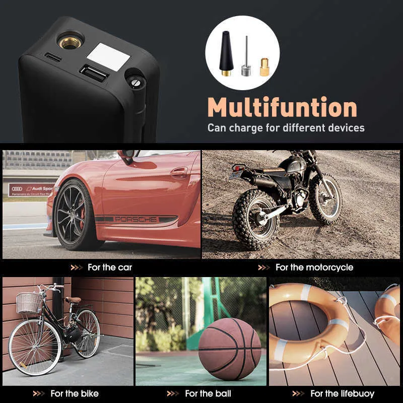

Benefits of Our Product!
The possiblities with PortaPump are endless, enjoy the ease of pumping on the go! Use our product for car tires, motorcycle tires, bike tires, sports balls, and even inflatables for the beach! PortaPump comes with a series of multifunction attachments that allow you to pump whatever you want without the hassle of going to the store and purchasing new attachments.
Camp often? Let us make it easier for you
Everybody knows the how problematic inflatable beds are, using the regular pump takes ages and the last thing you want on a camping trip is a flat bed and the cold ground. Look no further, PortaPump is here! With our high rpm pump, your bed will rise up faster than gas prices!